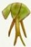
Orchidées terrestresUne liste
En France, les orchidées sont terrestres. En voici une liste bien entendu incomplète.
Ces orchidées peuvent être
1 - chlorophylliennes ou 2 - ± non chlorophylliennes
1 - Orchidées chlorophylliennes
avec 1-1 pollinaires ou 1-2 pollinies
1-1 - Orchidées chlorophylliennes avec pollinaires *
(pollinie + caudicule + rétinacle)
Tribus des OrchideaeCranichideae
Tribu des Orchideae
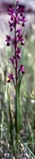 | Anacamptis laxiflora (Lam.) R.M.Bateman, Pridgeon & M.W.Chase Orchis à fleurs lâche |
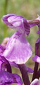 | Anacamptis morio (L.) R.M.Bateman, Pridgeon & M.W.Chase Orchis bouffon |
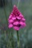 | Anacamptis pyramidalis (L.) Rich. Orchis pyramidal |
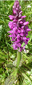 | Dactylorhiza fuchsii (Druce) Soó Orchis de Fuchs |
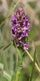 | Dactylorhiza incarnata (L.) Soó subsp. incarnata Orchis incarnat, orchis couleur de chair |
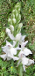 | Dactylorhiza maculata (L.) Soó Orchis tacheté, orchis maculé |
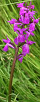 | Dactylorhiza traunsteineri (Saut. ex Rchb.) Soó Orchis de Traunsteiner |
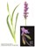 | Gymnadenia conopsea (L.) R. Br. Gymnadène à long éperon, orchis moucheron, orchis moustique |
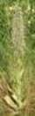 | Himantoglossum hircinum (L.) Spreng. Orchis bouc |
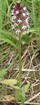 | Neotinea ustulata (L.) R.M.Bateman, Pridgeon & M.W.Chase Orchis brûlé |
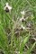 | Ophrys apifera Huds. Ophrys abeille |
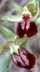 | Ophrys aranifera Huds. Ophrys araignée |
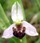 | Ophrys fuciflora (F.W.Schmidt) Moench Ophrys bourdon |
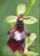 | Ophrys insectifera L. Ophrys mouche |
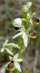 | Ophrys virescens Philippe Ophrys verdissant |
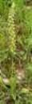 | Orchis anthropophora (L.) All. Orchis homme-pendu |
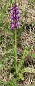 | Orchis mascula (L.) L. Orchis mâle, herbe à la couleuvre |
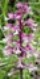 | Orchis militaris L. Orchis militaire |
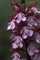 | Orchis purpurea Huds. Orchis pourpre |
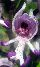 | Orchis simia Lam. Orchis singe |
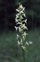 | Platanthera bifolia (L.) Rich. Platanthère à deux feuilles, platanthère à fleurs blanches |
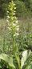 | Platanthera chlorantha (Custer) Rchb. Platanthère à fleurs vertes, orchis vert, orchis verdâtre |
Tribu des Cranichideae
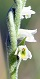 | Spiranthes spiralis (L.) Chevall. Spiranthe d'automne, spiranthe spiralée |
1-2 Orchidées chlorophyliennes avec pollinies *
(généralement des pollinies sans caudicule développé,
avec ou sans viscarium
et souvent un labelle divisé en épichile et hypochile)
Sous-famille des Epidendroideae
Tribu des Neottieae
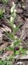 | Cephalanthera damasonium (Mill.) Druce Céphalanthère à grandes fleurs, elléborine blanche |
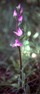 | Cephalanthera rubra (L.) Rich. Céphalanthère rouge, elléborine rouge |
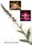 | Epipactis atrorubens (Hoffm.) Besser Épipactis brun rouge, épipactis pourpre noirâtre, épipactis rouge sombre |
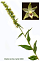 | Epipactis muelleri Godfery Épipactis de Müller |
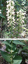 | Epipactis helleborine (L.) Crantz Épipactis à larges feuilles, elléborine à larges feuilles |
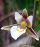 | Epipactis palustris (L.) Crantz Épipactis des marais, helléborine des marais |
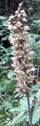 | Epipactis purpurata Sm. Épipactis pourprée, helléborine pourpre |
| Neottia ovata (L.) Bluff & Fingerh. Grande listère, listère ovale, listère à feuilles ovales |
2 - Orchidées ± non chlorophylliennes
Dans la sous-famille des Epidendroideae, elles font partie de la tribu des Neottieae.
- avec pollinies sans rétinacle
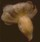
Neottia nidus-avis (L.) Rich.
Néottie nid d'oiseau - avec pollinies et rétinacle
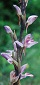
Limodorum abortivum (L.) Sw.
Limodore à feuilles avortées, limodore avorté,
limodore sans feuille
 |